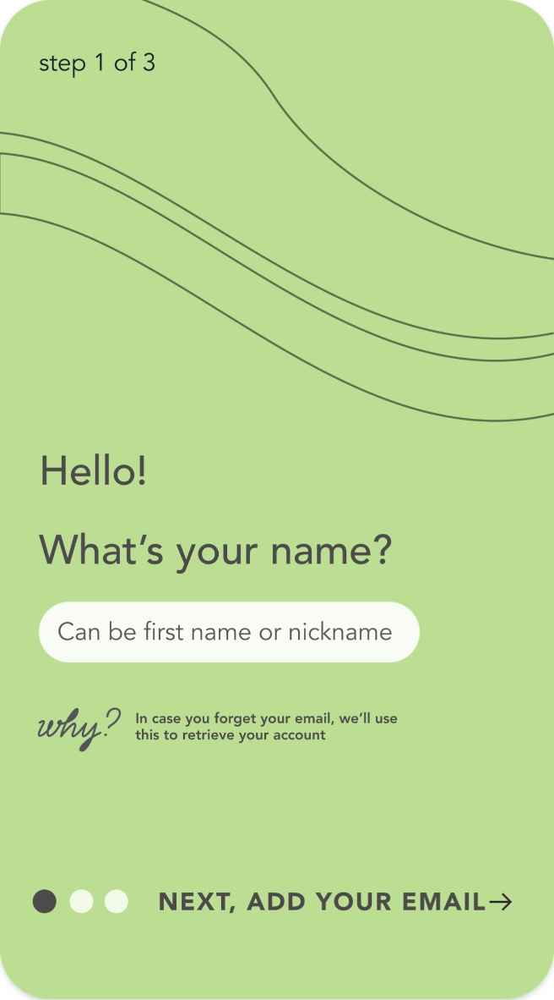
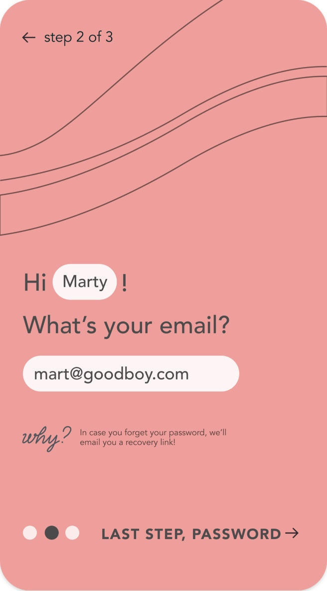
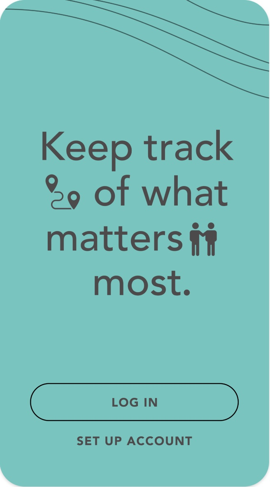

Gethr
60people in the
usability trial
A location app for families. In a 60-person trial most people could complete the core tasks. Verizon later moved on to other priorities.
I worked on the design, including stakeholder interviews and the style guide. The trial informed later location-based work.